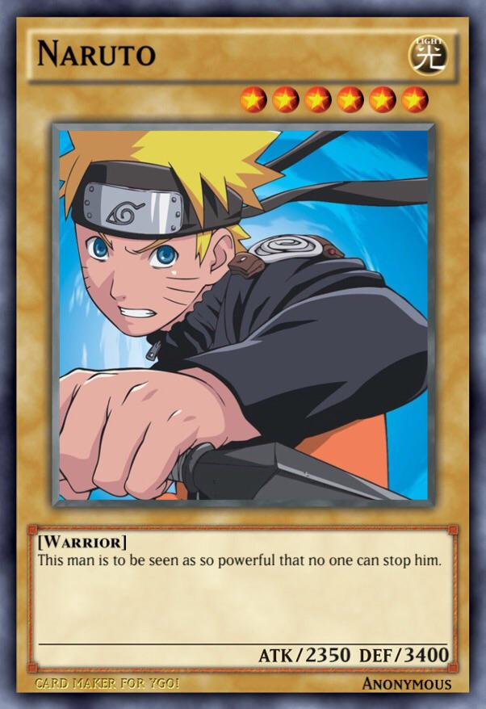

Cartas de Yugi
En algunas ciudades y pueblos podrás encontrar a Yugi, es una persona que prefiere luchar con cartas antes que con Pokemoitos, por lo que te ofrecerá un intercambio de Pokemoito a cambio de una Carta.
Casa de Yugi
La casa de Yugi aparecerá en distintitas localizaciones, en cada una pedirá una carta distinta.
Pueblo Comienzo
Carta de Naruto

Carta de Naruto, se consigue con la misión "Investiga el robo" de la Ruta 1.
Pueblo Salchichón
Carta de Ichigo
Carta de Ichigo, te la da Spiderman cuando se despida, en la Ruta 4.
Ciudad Mondongo
Carta de Sasuke
Carta de Sasuke, se consigue ganando al Científico de la Cueva Rocosa.
Pueblo Pancrudo
Carta de Goku
Carta de Goku, se consigue haciendo la misión de Yachiru.
Ciudad Batalla
Carta de Ace
Carta de Ace, Se le cae a Marowak al derrotarlo en la Ruta 4.
Pueblo Torrijas
Carta de Vegeta

Carta de Vegeta, te la da Mayuri al completar su misión.
Discos y Memorias
"El niño Perdido"